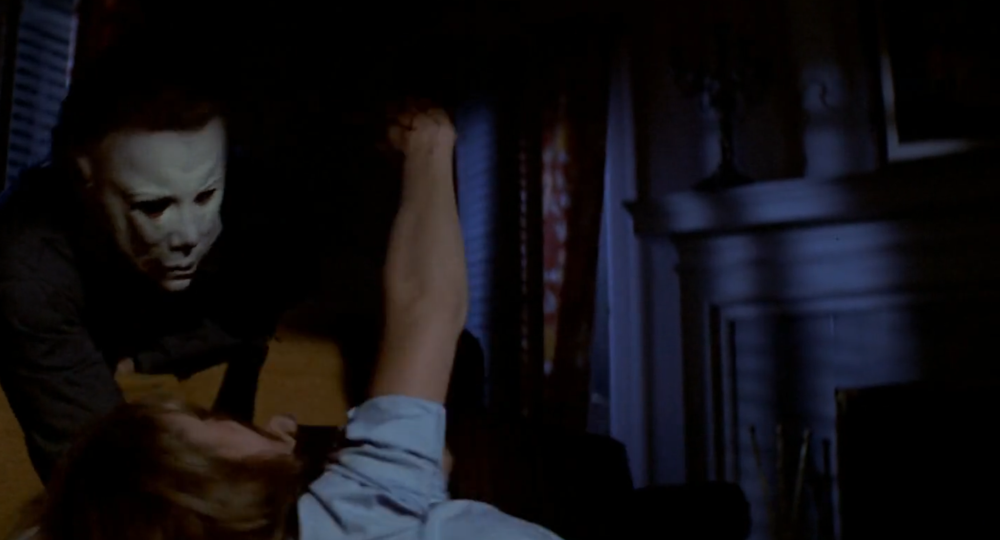

These are some of the musical analyses captured from "The Bogeyman" from Halloween score
This 3D visualization showing the piece's minimalistic piano music was made using music21
This is another visualisation made using music21 which captures a Histogram from the same music
This is a chart capturing a selection of musical data made using jSymbolic and Microsoft Excel
Halloween Movie Information on IMDB 